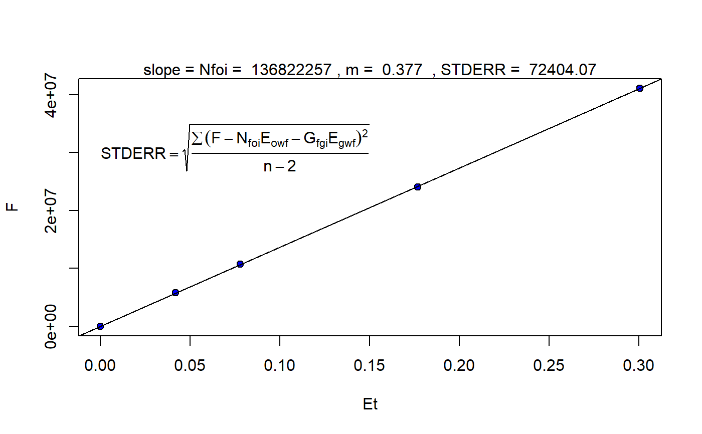
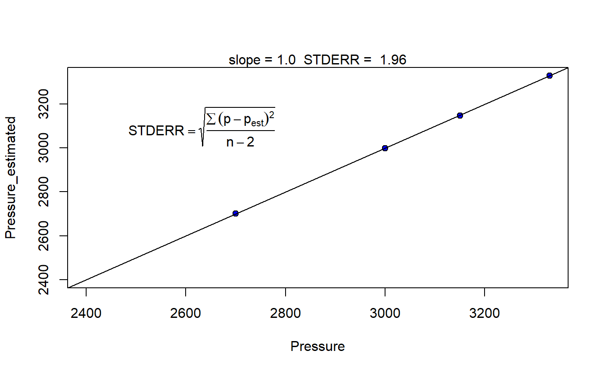
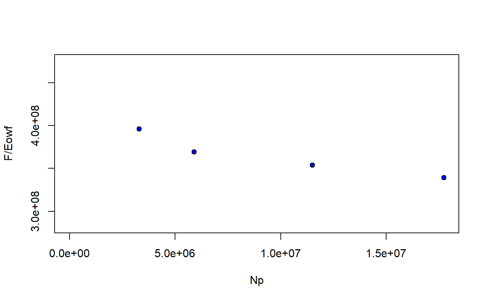

mbal_optim_oil.RdGenerate a list of class 'mbal_oil' with estimates for the unknown parameters of the material balance model according to the class of 'optim_lst' and 'time_lst' objects
mbal_optim_oil(optim_lst, time_lst)
| optim_lst | a list object of class 'optimization_oil' |
|---|---|
| time_lst | a list object of class 'time/date' |
a list of class 'mbal_oil' with estimates for the unknown parameters of the material balance model according to the class of 'optim_lst' and 'time_lst' objects
Walsh MP, Lake LW (2003). A Generalized Approach to Primary Hydrocarbon Recovery, 1st edition. Elsevier Ltd. ISBN 9780444506832, https://www.elsevier.com/books/a-generalized-approach-to-primary-hydrocarbon-recovery-of-petroleum-exploration-and-production/walsh/978-0-444-50683-2.
Walsh MP, Ansah J, Raghavan R (1994). “New, generalized material balance as an equation of a straight line: Part 1- Applications to undersaturated, volumetric reservoirs.” Proceedings of the Permian Basin Oil \& Gas Recovery Conference, 549--564.
Walsh MP, Ansah J, Raghavan R (1994). “New, generalized material balance as an equation of a straight line: part 2- Applications to saturated and non-volumetric reservoirs.” Proceedings of the Permian Basin Oil \& Gas Recovery Conference, 859--865.
p_pvt <- c(3330, 3150, 3000, 2850, 2700, 2550, 2400) Bo <- c(1.2511, 1.2353, 1.2222, 1.2122, 1.2022, 1.1922, 1.1822) Rs <- c(510, 477, 450, 425, 401, 375, 352) Bg <- c(0.00087, 0.00092, 0.00096, 0.00101, 0.00107, 0.00113, 0.00120) cw <- 2e-6 Bwi <- 1.0 Bw <- Bwi * exp(cw * (p_pvt[1] - p_pvt)) Rv <- rep(0, length(p_pvt)) muo <- rep(0.5, length(p_pvt)) muw <- rep(0.25, length(p_pvt)) mug <- rep(0.02, length(p_pvt)) pvt_table <- data.frame(p = p_pvt, Bo = Bo, Rs = Rs, Rv = Rv, Bg = Bg, Bw = Bw, muo = muo, mug = mug, muw = muw) p <- c(3330, 3150, 3000, 2850, 2700, 2550, 2400) We <- rep(0, length.out = length(p)) Np <- c(0, 3.295, 5.903, 8.852, 11.503, 14.513, 17.730) * 1e6 Rp <- c(0, 1050, 1060, 1160, 1235, 1265, 1300) Wp <- rep(0, length.out = length(p)) Wi <- rep(0, length.out = length(p)) Gi <- rep(0, length.out = length(p)) wf <- c(1, 1, 1, 0, 1, 0, 1) mbal_optim_oil_lst <- mbal_optim_param_oil(input_unit = "Field", output_unit = "Field", unknown_param = "N_m", aquifer_model = NULL, phi = 0.2, swi = 0.2, Np = Np,Rp = Rp, Wp = Wp, Gi = Gi, Wi = Wi, We = We, pb = 3330, p = p, pvt = pvt_table, cf = 0, wf = wf, sorg = 0.2, sorw = 0) time_lst <- mbal_time(c(0, 365, 730, 1095, 1460, 1825, 2190), "day") optim_results <- mbal_optim_oil(mbal_optim_oil_lst, time_lst)#> Warning: No interval w/ function 'f' changing sign was found.#> List of 18 #> $ input_unit : chr "Field" #> $ output_unit: chr "Field" #> $ N : num 1.37e+08 #> $ m : num 0.377 #> $ phi : num 0.2 #> $ swi : num 0.2 #> $ pb : num 3330 #> $ p : num [1:7] 3330 3150 3000 2850 2700 2550 2400 #> $ cf : num [1:7] 0 0 0 0 0 0 0 #> $ pvt :'data.frame': 7 obs. of 9 variables: #> ..$ p : num [1:7] 3330 3150 3000 2850 2700 2550 2400 #> ..$ Bo : num [1:7] 1.25 1.24 1.22 1.21 1.2 ... #> ..$ Rs : num [1:7] 510 477 450 425 401 375 352 #> ..$ Rv : num [1:7] 0 0 0 0 0 0 0 #> ..$ Bg : num [1:7] 0.00087 0.00092 0.00096 0.00101 0.00107 0.00113 0.0012 #> ..$ Bw : num [1:7] 1 1 1 1 1 ... #> ..$ muo: num [1:7] 0.5 0.5 0.5 0.5 0.5 0.5 0.5 #> ..$ mug: num [1:7] 0.02 0.02 0.02 0.02 0.02 0.02 0.02 #> ..$ muw: num [1:7] 0.25 0.25 0.25 0.25 0.25 0.25 0.25 #> $ prod :'data.frame': 7 obs. of 3 variables: #> ..$ Np: num [1:7] 0 3295000 5903000 8852000 11503000 ... #> ..$ Rp: num [1:7] 510 1050 1060 1160 1235 ... #> ..$ Wp: num [1:7] 0 0 0 0 0 0 0 #> $ inj :'data.frame': 7 obs. of 2 variables: #> ..$ Gi: num [1:7] 0 0 0 0 0 0 0 #> ..$ Wi: num [1:7] 0 0 0 0 0 0 0 #> $ We : num [1:7] 0 0 0 0 0 0 0 #> $ aquifer :List of 3 #> ..$ input_unit : chr "Field" #> ..$ output_unit: chr "Field" #> ..$ We : num [1:7] 0 0 0 0 0 0 0 #> ..- attr(*, "class")= chr [1:2] "NoA" "aquifer" #> $ wf : num [1:7] 1 1 1 0 1 0 1 #> $ sorw : num 0 #> $ sorg : num 0.2 #> $ p_est : num [1:5] 3330 3147 2999 2702 NA #> - attr(*, "class")= chr [1:2] "gas_cap_oil" "mbal_oil"